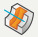
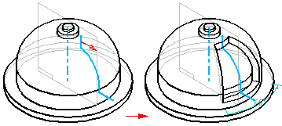

Revolved Cut command
Note:
The Revolve Cut command is available through customization. Use the Cut option for the Revolve command to create cutouts. For information on adding the command to the ribbon bar, see Customize the command ribbon.
Use the Revolve Cut command

to construct a cutout by revolving a profile.
Note:
When constructing a revolved cutout using more than one profile, all the profiles must be closed. All profiles must share a common axis of revolution.
You can define a non-symmetric extent for a revolved cutout feature. For example, you can specify 180 degrees for direction 1, and 75 degrees for direction 2.
How do I
Define an axis of revolutionConstruct a revolved extrusion or cutout
Define the extent of a revolved feature
Construct a revolved feature with an existing centerline axis
Learn more
Constructing revolved ordered featuresLook up more details
Revolve commandRevolve command bar
Revolved Cut command bar
Axis of Revolution command